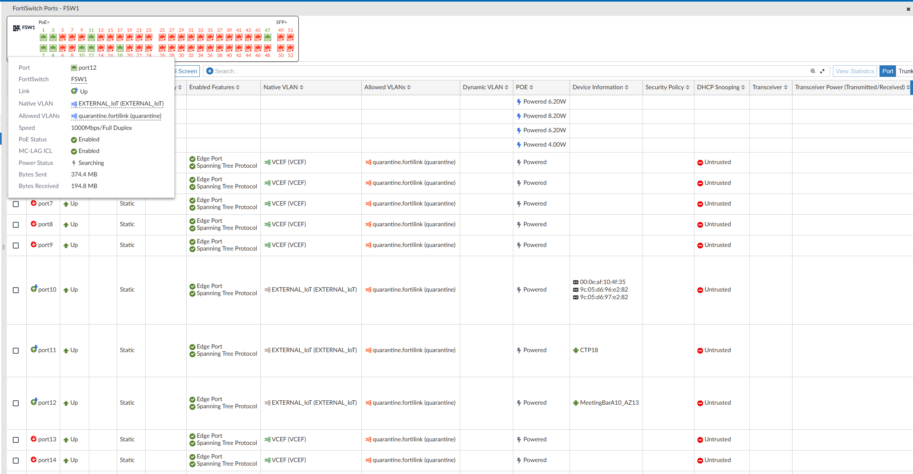
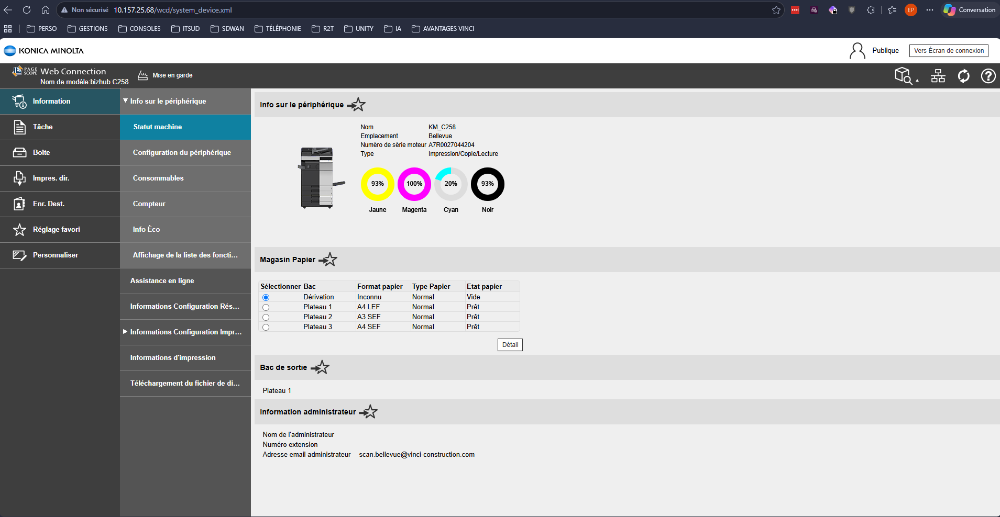
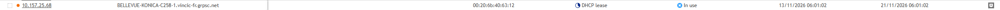

Contexte
Sur le chantier de Bellevue, le chef de chantier a commandé une imprimante multifonction pour les équipes travaux de la base-vie. Une fois le matériel livré sur site, la mission m'a été confiée côté service informatique : me rendre sur place pour en assurer l'installation complète, du raccordement réseau jusqu'à l'intégration au parc d'impression centralisé de la délégation bâtiment.
Raccordement réseau
Sur site, j'ai commencé par raccorder l'imprimante en filaire au FortiWifi Fortinet qui assure la connectivité de la base-vie. J'ai ensuite configuré le port du FortiSwitch correspondant pour affecter l'imprimante au VLAN prévu pour ce type d'équipement, afin de l'isoler du reste du trafic utilisateur.

Configuration IP & IPAM
J'ai ensuite configuré les paramètres réseau de l'imprimante directement depuis son interface d'administration : adresse IP, masque, passerelle et serveurs DNS.

Une fois l'imprimante joignable, je me suis connecté à Efficient IP (l'outil IPAM de Vinci) pour réserver l'adresse que l'imprimante avait obtenue en DHCP. Cette réservation garantit qu'elle conservera la même adresse dans le temps, ce qui est indispensable pour que les postes clients et le serveur d'impression la trouvent de manière fiable.

Service scan-to-mail
L'imprimante devait également permettre d'envoyer les documents numérisés par courriel aux utilisateurs (scan-to-mail). J'ai configuré sur l'imprimante le service SMTP en pointant vers le serveur SMTP de Vinci, puis j'ai demandé l'autorisation de l'adresse IP de l'imprimante sur ce serveur : sans cette autorisation, les envois seraient rejetés par le relais SMTP.
Pour faciliter la prise en main par les conducteurs de travaux, j'ai ensuite pré-rempli le carnet d'adresses de l'imprimante avec les adresses mail des principaux utilisateurs du chantier. Ils n'ont ainsi plus besoin de la saisir manuellement à chaque numérisation.
Intégration au serveur d'impression
Dernière étape côté infrastructure : j'ai ajouté l'imprimante sur le serveur d'impression de la délégation bâtiment, en installant le driver correspondant. Cette intégration apporte deux bénéfices :
- les utilisateurs peuvent imprimer sur cette imprimante depuis n'importe quel poste du périmètre sans configuration locale ;
- le parc d'imprimantes de la délégation est géré de manière centralisée et homogène, avec un seul point de pilotage pour les mises à jour de drivers et le suivi des files d'impression.
Tests et mise en service
Avant de laisser l'imprimante aux équipes du chantier, deux tests de bout en bout :
- un test de scan-to-mail vers une adresse connue, pour valider la chaîne SMTP complète (imprimante → relais Vinci → boîte destinataire) ;
- une impression de page de test lancée depuis le serveur d'impression, pour vérifier que l'imprimante est bien pilotée par la file centralisée.
Conclusion
L'imprimante a été livrée aux équipes travaux pleinement opérationnelle, avec un carnet d'adresses déjà utilisable et une intégration au parc central qui évite toute configuration côté utilisateur. Cette mission m'a permis de pratiquer l'installation d'un équipement sur un réseau d'entreprise, de la couche physique (câblage, port FortiSwitch) jusqu'aux services applicatifs (SMTP, serveur d'impression), tout en coordonnant plusieurs composants d'infrastructure Vinci (FortiGate, Efficient IP, relais SMTP, serveur d'impression).
Compétences validées
Cette situation professionnelle valide les compétences suivantes :
Gérer le patrimoine informatique
Intégration de l'équipement au parc d'impression central, réservation IPAM, mise en conformité avec les référentiels réseau et SMTP.
Voir la compétence → C 03Mettre à disposition des utilisateurs un service informatique
Service d'impression et de numérisation opérationnel pour les équipes travaux, carnet d'adresses pré-rempli pour faciliter la prise en main.
Voir la compétence → C 07Installer, tester et déployer une solution d'infrastructure réseau
Raccordement filaire, configuration du port et du VLAN sur le FortiSwitch, paramétrage IP et SMTP, tests fonctionnels complets.
Voir la compétence →